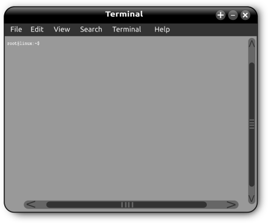

What are Linux Distributions?

When you get Linux for your computer, you are essentially getting Linux distribution. Just like other popular operating systems, you get an installation program that consists of the kernel, a graphical user interface, a desktop, and a bunch of applications that you can readily use once you installed Linux in your computer. The added bonus is that you also get the opportunity to get your hands on the source code for the kernel and the applications that you get, which allows you to tweak them the way you want them to operate in the future.
While you can add desktop environments, apps, and drivers that don’t come with your distribution, you will need to find the distribution that will give you the ideal setup that you have in mind. Doing so will save you the time that you may need to spend on finding apps and other programs that will work best with the Linux that you have installed, which can get in the way of setting up the system just the way you want it.
What Comes with a Distro?
GNU software
Most of the tasks that you will be performing using Linux involve GNU software. These are utilities that you can access using the text terminal, or the interface that looks like a Windows command prompt where you enter commands. Some of the GNU software that you will be using are the command interpreter (also known as the bash shell) and the GNOME GUI.
If you are a developer, you will be able to make changes to the kernel or create your own software for Linux using a C++ compiler (this already comes with the GNU software that comes with your Linux distro) and the Gnu C. You will also be using GNU software if you edit codes or textfiles using the emacs or the ed editor.
Here are some of the most popular GNU software packages that you may encounter as you explore Linux utilities:
Applications and GUIs
Since you will not want to type string after string of commands on a command terminal just for your computer to do something, youw will want to navigate and use programs in your computer using a GUI or a graphical user intergace. A GUI enables you to click on icons and pull up windows that will help you use a program easier.
Most of the distros use the K Desktop Environment (KDE ), or the GNU Object Model Environment (GNOME). If you have both environments installed on your computer, you can choose which desktop will serve as the default, or you can switch between them from time to time. Both these desktops have a similar feel to Mac OS and Windows desktops. It is also worth taking note that GNOME comes with a graphical shell called Nautilus, which makes the Linux configuration, file search, and application loading easier. Should you need to use a command prompt, all you need to do is to click on the terminal window’s icon on both desktop environments.
Apart from GUIs, any average computer user will also need to to use applications, or programs that you can use to perform basic computing needs. While you may not have access to the more popular programs that you may have used in a Mac or Windows computer, Linux can provide open-source alternatives that you can try out. For example, instead of having to buy Adobe Photoshop, you can try out The GIMP, which is a program that works just as great when it comes to working with images.
Linux also offers productivity software packages which fulfills the bulk of an ordinary computer user’s needs. You can get office productivity apps that will allow you to do word procesing, create database, or make spreadsheets from Libreoffice.org or OpenOffice.org.
Tip: If you want to install MS applications to Linux (e.g., Microsoft office), you can use CrossOver Office. You can download this app from
Networks
Linux allows you to find everything that you need by using a network and exchange information with another computer. Linux allows you to do this by allowing you to use TCP/IP (Transmission Control Protocol/Internet Protocol), which allows you to surf the web and communicate with any server or computer out there.
Internet servers
Linux supports Internet services, such as the following:
Email
News services
File transfer utilities
World wide web
Remote login
Any Linux distro can offer these services, as long as there is Internet connection, and that the computer is configured to have Internet servers, a special server software that allows a Linux computer to send information to another computer. Here are common servers that you will encounter in Linux:
in.telnetd – allows you to log in to a different system wia the internet, with the aid of a protocol called TELNET
sendmail – serves as a mail server which allows exchange of emails between two systems using the Simple Mail Transfer Protocol (SMTP)
innd – allows you to view news using the Network News Transfer Protocol (NNTP), which enables you to access a news server in a store-and-forward way.
Apache httpd – allows you to send documents to another system using the HyperText Transfer Protocol (HTTP).
vsftpd – allows you to send a file to another computer using the filetransfer protocol (FTP)
sshd – allows you to log-in to a computer securely using the internet, using the Secure Shell (SSH) protocol
Software Development
Linux is a developer’s operating system, which means that it is an environment that is fit for developing software. Right out of the box, this operating system is rich with tools for software developments, such as libraries of codes for program building and a compiler. If you have background in the C language and Unix, Linux should feel like home to you.
Linux offers you the basic tools that you may have experienced using on a Unix workstation, such as Sun Microsystems, HP (Hewlett-Packard), and IBM.
Online documentation
After some time, you will want to look up more information about Linux without having to pull up this book. Fortunately, Linux has enough information published online that can help you in situations such as recalling a syntax for a command. To pull this information up quickly, all you need to do us to type in “man” in the command line to get the manual page for Linux commands. You can also get help from your desktop and use either the help option or icon.
Things to Consider When Choosing Distros
What is the best Linux distro (short for distribution) is for you? Here are some things that you may want to keep in mind:
Package managers
One of the major factors that separate distros from one another is the package manager that they come with. Just like what you may expect, there are distros that come with features that allow them to be easier to use from the command line while you are installing the features that come with them.
Another thing that you need to consider apart from the ease of use is the package availability that comes with distros. For example, there are certain distros that are not as popular as the others, which means that there are less apps out there that are developed to be used with certain distributions. If you are starting out on Linux, it may be a good idea to install a distro that does not only promise easy navigation from the get-go, but also a wide range of apps that you may want to install in the future.
Desktop environment
You will want to have a distro that allows you to enjoy a desktop that works well with your computing needs – you will definitely want a desktop that has great customization options, and easy to find windows and menus. You will also want to ensure that your desktop have efficient resource usage, as well as great integration with the apps that you plan to use.
While it is possible for you to place another desktop environment in the future, you will still want the desktop that comes with your distro to resemble the desktop that you really want to have. This way, you will not have to spend too much effort trying to setup every app that you want to have quick access to and ensure that all your applications are able to work well as they run together.
Hardware Compatibility
Different distros contain different drivers in the installation package that they come from, which means that there is a recommended set of hardware for them to work seamlessly. Of course, you can check out other sources of drivers that will work best with your existing hardware, but that only creates more work when it comes to getting everything running right away from installation. To prevent this trouble, check the distro’s compatibility page and see whether all your computer peripherals work fine with your Linux distribution out of the box.
Stability and Being Cutting Edge
Different distributions put different priorities on stability and updates to get the latest version of applications and packages. For example, the distro Debian tends to delay getting some application updates to make sure that your operating system remains stable. This may not be suitable for certain users that prefer to always get the latest version of applications and get the latest features.
Fedora, on the other hand, performs quite the opposite – it is focused on getting all your programs and features up to date and ensures that you always have the greatest and the latest wares for your Linux. However, this may happen at the expense of stability of the app, which may prompt you to roll back to the previous version.
Community Support
Linux is all about the community that continuously provides support to this operating system, from documentation to troubleshooting. This means that you are likely to get the resources that you need when it comes to managing a particular distribution if it has a large community.
Great Distros to Try
Now that you know what makes a Linux distribution great and you are about to shop for the distro that you are going to install, you may want to check these distributions that may just work well for you:
Ubuntu
Ubuntu is largely designed to make Linux easy to use for an average computer user, which makes it a good distribution for every beginner. This distro is simple, updates every six months, and has a Unity interface, which allows you to use features such as a dock, a store-like interface for the package manager, and a dashboard that allows you to easily find anything on the OS. Moreover, it also comes with a standard set of applications that works well with most users, such as a torrent downloader, a Firefox web browser, and an app for instant messaging. You can also expect great support from its large community.
Linux Mint
This distro is based on Ubuntu but is designed to make things even easier for any user that has not used Linux in the past – it features familiar menus and is not limited to just making you use open source programs. This means that you can get programs that are standard in popular operating systems such as .mp3 support and Adobe Flash, as well as a number of proprietary drivers.
Debian
If you want to be cautious and you want to see to it that you are running a bug-free and stable computer at all times, then this is probably the distro for you. Its main thrust is to make Linux a completely reliable system, but this can have some drawbacks –Debian does not prioritize getting the latest updates for applications that you have, which means that you may have to manually search for the latest release of most software that you own. The upside is that you can run Debian on numerous processor architectures, and it is very likely to run on old builds.
However, this does not mean that going with Debian is having to remain outdated – it has a lot of programs available online and in Linux repositories.
OpenSUSE
OpenSUSE is a great distro that you may consider trying out because it allows you to configure your OS without having the need to deal with the command line. It usually comes with the default desktop KDE, but will also let you select between LXDE, KDE, XFCE, and GNOME as you install the distro package. It also provides you good documentation, the YaST package manager, and great support from the community.
One of the drawbacks that you may have when using this distro is that it can consume a lot of resources, which means that it is not ideal to use on older processor models and netbooks.
Arch Linux
Arch Linux is the distro for those that want to build their operating system from scratch. All that you are going to get from the installation package from the start is the command line, which you will use to get applications, desktop environment, drivers, and so on. This means that you can aim to be as minimal or as heavy in features, depending on what your needs are.
If you want to be completely aware of what is inside your operating system, then Arch Linux is probably the best distro for you to start with. You will be forced to deal with any possible errors that you may get, which can be a great way to learn about operating Linux.
Another thing that makes this distro special is that it uses Pacman, which is known to be a powerful package manager. Pacman comes in a rolling release, which means that you are bound to install the latest version of every package that is included – this ensures that you are bound to get cutting edge applications and features for your Linux. Apart from this package manager, you also get to enjoy the AUR (Arch User Repository), which allows you to create installable version of available programs. This means that if you want a program that is not available in Arch repositories, you can use the AUR helper to install applications and other features like normal packages.